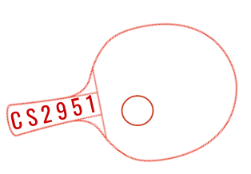

Professor: Serdar Kadioglu | serdark@cs.brown.edu |
 |
We are undoubtedly in the middle of an Analytics Revolution that enabled turning huge amounts data into insights, and insights into predictions about the future. At the final frontier, Prescriptive Analytics aims to identify the best possible outcome given a certain objective function and a set of constraints. With that goal in mind, this course provides students with a comprehensive overview of the theory and practice of how to apply Prescriptive Analytics through optimization technology. A wide variety of state-of-the-art techniques are studied including: Boolean Satisfiability, Constraint Programming, Linear Programming, Integer Programming, Local Search Meta-Heuristics, and Large-Scale Optimization.
The students are exposed to the industrially relevant software packages such as IBM Optimization Studio. The practical challenges encountered in implementing such systems are also explored. Additionally, the life-cycle of decision support systems is discussed and problems from real-life application domains such as planning, scheduling, resource allocation, supply-chain management, and logistics are addressed.
The primary goal of this course is to introduce the fundamental ideas behind optimization technology to the extent that you can utilize this knowledge to build your own solvers based on various paradigms. Both complete and incomplete search methods, particularly tree-search and heuristic techniques will be covered in order to present different trade-offs. By the end of this course you will be able to transform a given optimization problem into analytical models with complementary strengths, and then, tackle it using off-the-shelf general purpose solvers and/or writing your own custom solutions. This course shall also complement descriptive and predictive analytics as it connects data-centric approaches with their optimum decision-making counterpart.
To ensure that students are able to plan around conflicts and obligations without adversely impacting their grades, we aim to set deadlines that plan around student obligations as best we can and provide extensions when appropriate. To ensure that students can voice their own concerns about the course, we aim to hold sufficient office hours and make it clear to whom students can go and how to voice their concerns.
Project - V: Transporation & Logistics is out! Due date is May 13th, 10PM
Project - III: Supply Chain Management is out! Due date is April 17th, 10PM
Project - II: Deadline postponed to March 22nd
Project - II: Employee Scheduling is out! Preliminary due date is March 6 (before class). Due date is March 13, 10PM
Project - I: Mass Customization is out! Preliminary due date is Feb 10, 10PM Due date is Feb 21, 10PM
Due date is Jan 31, 10PM
Project - 0: Olympia is out! Due date is Jan 31, 10PM